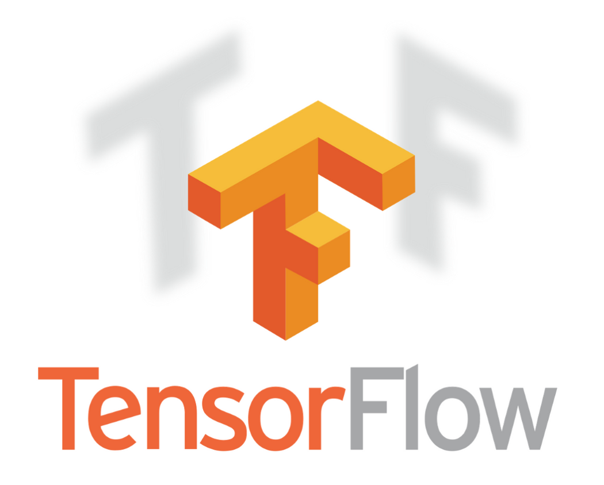

Ribbon Communications
Apr 2024 - Jun 2024
Senior Engineering Technical Analyst
- Modernized automation and validation workflows for VoIP and SBC releases.
- Improved release stability through stronger performance and reliability testing.
About
Master of Information Technology at RMIT |Ex Sr. Software Engineer @ Ribbon Communications
Project Portfolio
Featured Engineering Work
Practical, production-oriented projects in Machine Learning, NLP, and software engineering with measurable outcomes.
Multimodal Deep Learning for Visual Entailment
BERT-Small and ResNet-101 fusion architecture for robust image-text inference tasks.
Multi-Agent LLM Survey Intelligence Pipeline
Retrieval + reranking + stance classification pipeline to generate evidence-backed analysis.
QoS-Aware Packet Scheduling with Reinforcement Learning
RL-based routing scheduler to optimize packet prioritization across heterogeneous traffic classes.
Primary Section
Project Portfolio
Selected projects across Machine Learning, NLP, Application Development, and Database Engineering.
Education
Jul 2024 - Jun 2026
RMIT University, Melbourne
Master of Information Technology
GPA: 3.5/4
Aug 2017 - Jul 2021
St Joseph's College of Engineering, Chennai
Bachelor's In Electronics and Communication Engineering
GPA: 9.03/10
Jan 2023 - Jun 2024
RMIT University, Melbourne
Master of Information Technology
GPA: 3.67/4
Jun 2010 - Jul 2014
St Joseph's College of Engineering, Chennai
Bachelor's In Electronics and Communication Engineering
GPA: 9.03/10
Technical Skills
Backend Languages


Frontend Languages


Platforms


Tools


Machine Learning



NLP


Backend Languages
Frontend Languages
Platforms
Tools
Machine Learning
NLP
Work Experience
Delivered automation, performance engineering, and platform reliability outcomes at Ribbon Communications.
Ribbon Communications
Apr 2024 - Jun 2024
Senior Engineering Technical Analyst
Ribbon Communications
Aug 2021 - Mar 2024
Engineering Technical Analyst